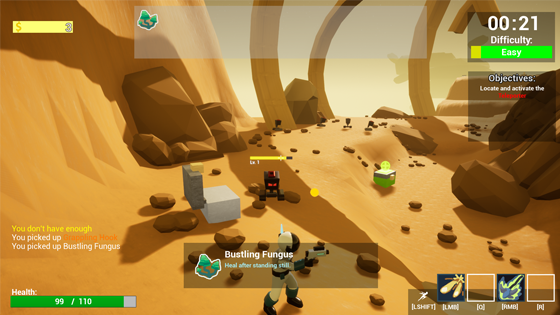
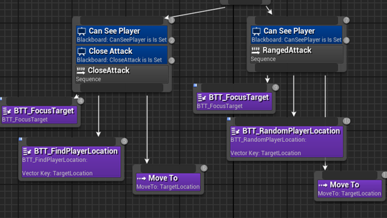
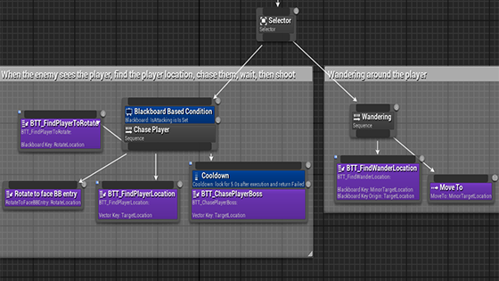
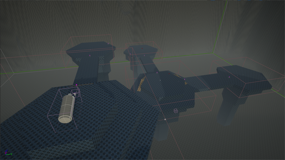
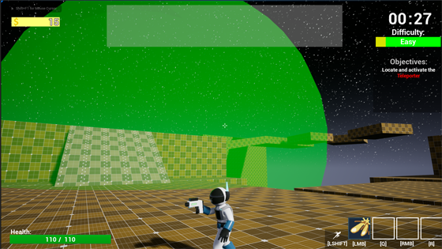

Astromando
- Used Blueprints in Unreal Engine to create a game over four months.
- Used Perforce for version control, Confluence for documentation, and Jira for task tracking.
- Worked with Game Artists to provide assets that fit well into our game's design and theme.
Section Summary
Using Unreal Engine's Systems & Collaboration With Others
Astromando was a four month long project made in Unreal Engine 4. My teammates and I had a reference game, Risk of Rain 2, and worked together to build up our own Third Person Roguelike based on the likes of our reference game.
As a team of four, we needed reliable, and efficient ways to document our game, as well as assign, and track tasks during our two week sprints. For version control, we used Perforce as our version control platform as it has good compatability with Unreal Engine and large files. For documentation and task tracking, we used Confluence and Jira which have good integration with each other, and provided us everything we would need for our project scope.
For the first three months of our project, we relied heavily on placeholder assets, and programmer art. However, in month four we collaborated with Game Artists to produce 3d assets for our game. From them we received models and animations for our player, our teleporter, and certain enemy types. While a lot of our assets remained placeholder at the end of the project, the assets we did receive we managed to integrate well into the project.


- Created an enemy AI system using Unreal Engine's behavior trees and blackboards.
- Created a modular system by creating a base enemy AI, and making child blueprints based on that core enemy.
- Created an enemy spawning system based on safe points on the map, and distance from the player.
Section Summary
Creating a Modular AI System in Unreal Engine
Using Unreal Engine's robust built in behvaior trees and blackboards, I was able to create a modular enemy AI for our project when combined with inheritence. The behavior trees allow the enemies to pathfind, and attack either with projectiles, or physically if close enough to the player.
The system I made was modular, with a base enemy supplying the basic functions and stats such as healh, on damage, and attack. The behavior trees themselves were generic, with a close, and a ranged variety that could then be modified if necessary for specific enemies or bosses.
The enemy spawning system was a combination of random generation, and constraints based on the player. Enemies would be given a radius based on the player's current location, and then we would use a function to get a random safe point in that radius. If there was a pit, a chest, teleporter, etc then an enemy would have to find another point to spawn.


- Created basic blockout designs for levels in our game.
- Created unique level mechanics for each level that was created.
- Follow project guidelines to ensure levels had safe locations for the portal, chests, and enemies to spawn.
Section Summary
Level Blockouts, Level Mechanics, and Design Guidelines
Each person on the team contributed to the level design of our project, and I contributed two of our levels, although one would be left out of the final product. Each level was constructed out of either basic geometry or simple terrain to make blockmesh versions. While we received assets for the player, some enemies, and the telporter, the levels remained primarily blockmesh for the rest of the project.
Each level has a specific design mechanic. My first level has a laser-like zipline taking you from one end to the other allowing the player to quickly move across the map, access new areas, or escape dangerous situations. My second level had contained natural disasters that would randomly occur such as acid fog, or a meteor shower that would damage the player. However, we found that these mechanics and the level itself didn't quite fit with the rest so we decided to scrap it with a few others as well to ensure a good scope, and level progression.
We made sure as a team to set ourselves guidelines for designing our levels. These were open ended levels, not a point a to point b, and the content on each was procedurally generated. We often had to make design decisions to ensure that not only were the levels fitting for the style of gameplay, but also that we were able to make sure our procedural generation could work regardless of the level. So this meant making sure we had a few flat surfaces, and clean areas without many pits or objects that could get in the way of object spawning.
